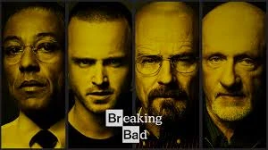

BREAKING BAD
Breaking Bad no es solo una serie: es una transformación lenta, incómoda
y fascinante.
La historia sigue a Walter White, un profesor de química
común que, enfrentado a una enfermedad terminal y una vida que siente
desperdiciada, toma una decisión que lo cambia todo: empezar
a fabricar metanfetamina.

Lo que comienza como una forma desesperada de asegurar el futuro de su
familia, se convierte en un descenso progresivo hacia un mundo donde
la moral se diluye y el poder se vuelve adictivo.
La serie juega constantemente con una pregunta incómoda: ¿En qué momento alguien deja de ser “buena persona”?
Con una narrativa intensa, personajes complejos y una evolución
psicológica pocas veces vista, Breaking Bad
se convirtió
en una de las series más influyentes de la televisión moderna.